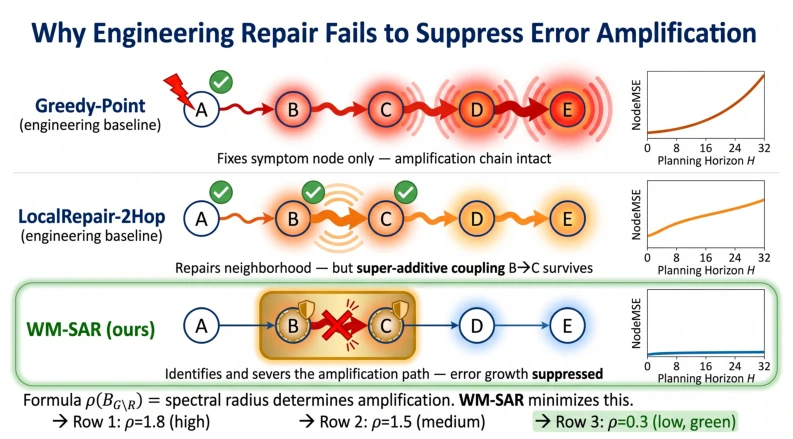
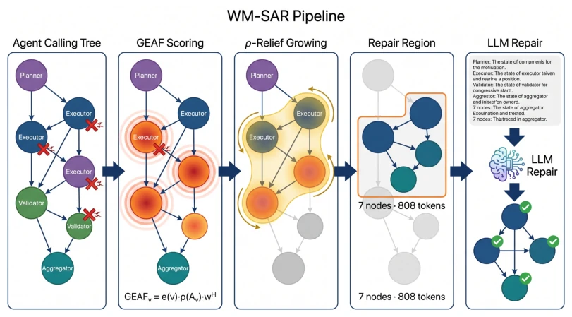
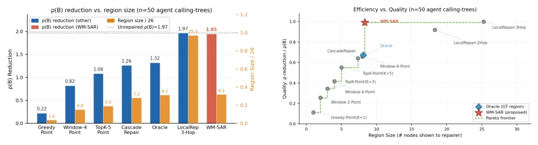
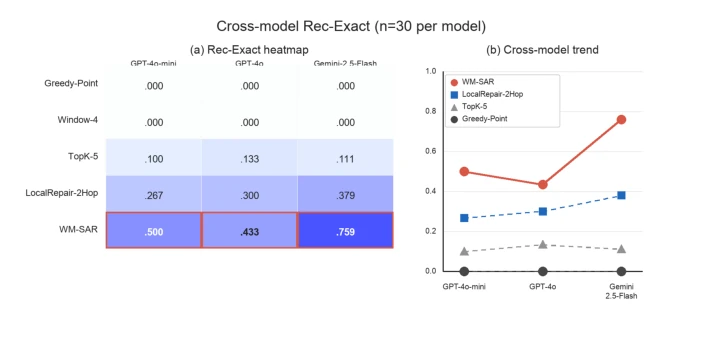
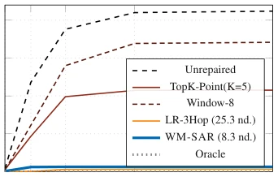
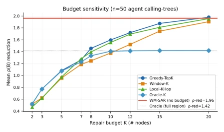
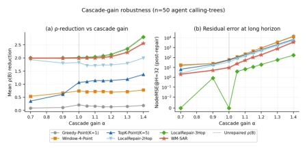
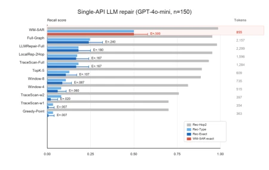

This paper's title is quite apt: fix amplifiers, not symptoms, directly addressing the pain point of long-horizon planning. When an LLM Agent runs thousands of steps and encounters errors, recalculating the entire graph is not feasible due to budget constraints. Existing engineering methods resemble fixing pipes by plugging leaks where they appear, yet the upstream continues to spray. WM-SAR employs spectral theory to identify amplifiers; while theoretically rigorous, it relies on node error signals and fails in black-box scenarios. It transforms graph correction into spectral radius optimization, which is indeed superior to TopK's blind guessing, but becomes ineffective without intermediate state errors. However, for controllable simulation environments, this truly optimizes LLM context budget usage to the extreme, representing precision strikes rather than carpet bombing, demonstrating outstanding performance in token efficiency.
研究动机Motivation
随着 Agent 规划从短链转向持久工作流，错误在大型规划图中传播而非孤立发生。全图重算不现实，消耗上下文预算且暴露无关症状（Liu et al., 2024a）。现有方法如 ReAct (Yao et al., 2023) 或 Toolformer (Schick et al., 2023) 多关注单步预测或线性轨迹，缺乏图结构下的错误修正机制。工程式修正器扫描可见症状，常遗漏重放大错误的因果子图，导致修复后误差复发。需要一种能识别并修复放大器而非症状的机制，以在有限预算下实现长期稳定性，避免长上下文检索失效。
As Agent planning shifts from short chains to persistent workflows, errors propagate within large planning graphs rather than occurring in isolation. Recalculating the entire graph is impractical, as it consumes context budget and exposes irrelevant symptoms (Liu et al., 2024a). Existing methods such as ReAct (Yao et al., 2023) or Toolformer (Schick et al., 2023) primarily focus on single-step prediction or linear trajectories, lacking error correction mechanisms within graph structures. Engineering-based correctors scan visible symptoms, often overlooking causal subgraphs responsible for error amplification, leading to error recurrence after repair. There is a need for a mechanism capable of identifying and repairing amplifiers rather than symptoms to achieve long-term stability under limited budgets and avoid the failure of long-context retrieval.

Figure 1: World-model correction should target the amplifier rather than the most visible symptom. Greedy repair fixes the highest-error node but leaves the causal path active. A fixed local neighbourhood can still miss the node-edge coupling that recreates the failure. WM-SAR selects the compact connected path whose removal lowers residual amplification, which flattens the empirical NodeMSE curve over horizon H.
WM-SAR is divided into two phases. Phase 1 Region Selection: Calculate the GEAF score (error × local spectral radius) and evaluate the node-edge coupling factor kappa_v. Based on Delta rho-relief, greedily grow a connected subgraph to maximize the reduction of residual spectral radius. Phase 2 LLM Repair: Serialize only the selected subgraph to the LLM to locate the root cause. The core lies in proving that the residual spectral radius rho(B) controls rollout error growth (Theorem 2). Pruning is used to remove redundant nodes, ensuring the repair region is compact. Compared to engineering scanning, it directly optimizes the key term in the planning regret bound, rather than merely reducing local errors. The algorithm includes seed selection, marginal gain expansion, and redundant pruning to ensure connectivity. This method introduces graph-theoretic spectral analysis into Agent correction, achieving a transition from symptom repair to stability repair.

Figure 2: WM-SAR workflow. Region selection first scores every node by local amplification and node-edge coupling, seeds compact candidate regions, expands them by marginal residual-spectral relief, and prunes redundant nodes. Only the final connected region is serialized for LLM root-cause repair, keeping the language-model context focused on the amplifying subgraph.

Figure 3: Spectral relief per repaired region. Engineer- ing correctors can reduce error, but many spend budget on nodes that do little to lower the residual amplifier. WM-SAR reaches the high-relief regime with a small connected subgraph, whereas fixed-hop repair obtains similar relief mainly by expanding toward whole-graph replay.
Experiments utilize synthetic call trees and benchmark topologies such as SWE-bench and WebArena. Baselines include Greedy, TopK, Window, LocalRepair, and Whole Graph LLM. Metrics include NodeMSE, rho(B)-reduction, and token efficiency. Results show that WM-SAR achieves near whole-graph stability using approximately 8 nodes, significantly outperforming LocalRepair-3Hop (which requires 25 nodes). Cross-model testing (GPT-4o, Gemini) demonstrates that the advantage does not depend on a specific API. Ablation studies indicate that the growth phase is the most critical. However, performance declines on the Who&When black-box benchmark due to the lack of node error signals, exposing its applicability boundaries. Experiments prove that it outperforms brute-force whole-graph recalculation in budget-sensitive scenarios and exhibits good generalization across different models.

Figure 5: Cross-model LLM root-cause identification under the same repair prompt. The heatmap reports Rec- Exact for each method-model pair, and the trend plot compares WM-SAR against engineering correctors across GPT-4o-mini, GPT-4o, and Gemini-2.5-Flash. The gain persists across model tiers, which indicates that the selector improves the evidence shown to the LLM rather than exploiting one particular API.

Figure 6: NodeMSE@H (n = 50, seed=42). Point- wise/window methods diverge. LR-3Hop flattens by covering ≈99% of the graph. WM-SAR achieves near- zero MSE with only 8.3 nodes.

Figure 7: Budget sensitivity: ρ(B)-reduction versus region size K (n = 50, seed=42). The red horizontal line is WM-SAR’s selected region (not forced to a fixed K), which reaches ρ-reduction 1.96. Engineering methods need K ≥15 to approach this value. The grey dotted line is the Oracle-region baseline in this budget sweep.

Figure 8: Cascade-gain sensitivity (n = 50, seed=42, α ∈[0.7, 1.4]). Left: ρ(B)-reduction grows monotoni- cally with α for every method; WM-SAR tracks LR- 3Hop (full-graph) while Greedy stays near-zero. Right: post-repair NodeMSE@32 stays ≤10 for WM-SAR across the entire α range while engineering baselines diverge.

Figure 9: Single-API LLM root-cause repair (GPT-4o- mini, n = 150). Bars show Rec-Hop2, Rec-Type, and Rec-Exact; horizontal whiskers are 95% intervals for Rec-Exact. Token counts are shown at right. WM-SAR obtains the highest Rec-Exact while using a compact 855-token region.